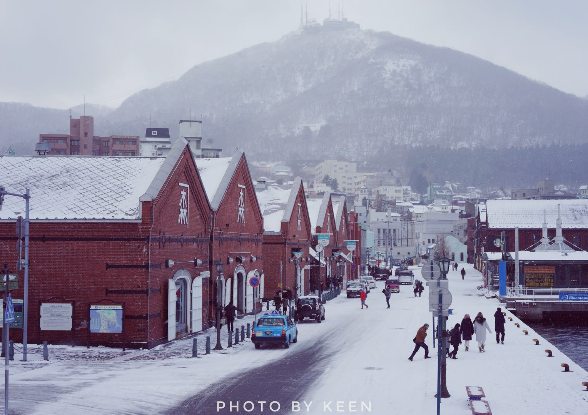

Travelling in Hakodate
Hakodate is one of the earliest ports of Japan, thus keeps some non-traditional styles due to its history.

Hakodate Mountain Night
photography

Red-brick Buildings
photography
Morning Markets
photography

Lucky Pierrot Hamburgers
photography